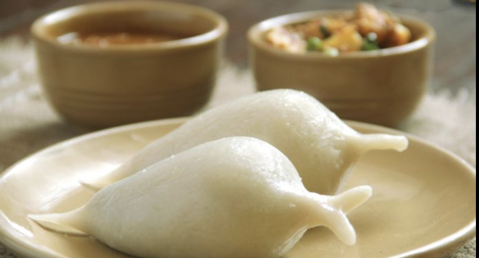
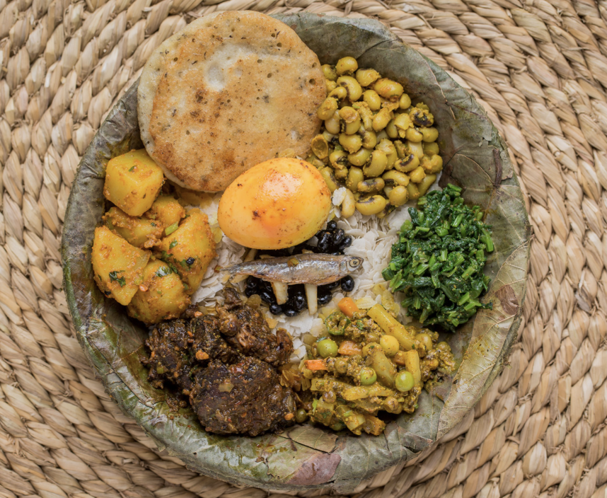
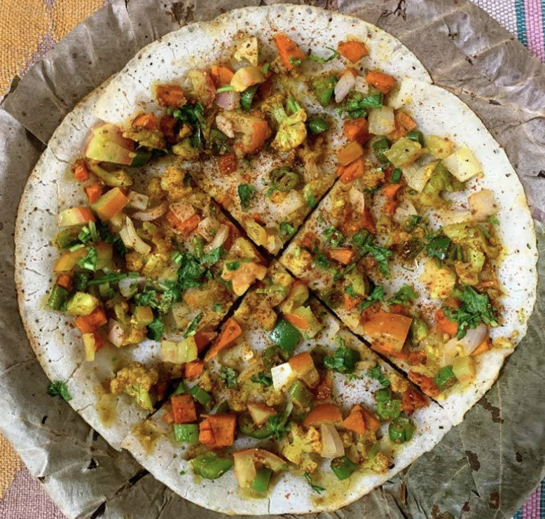
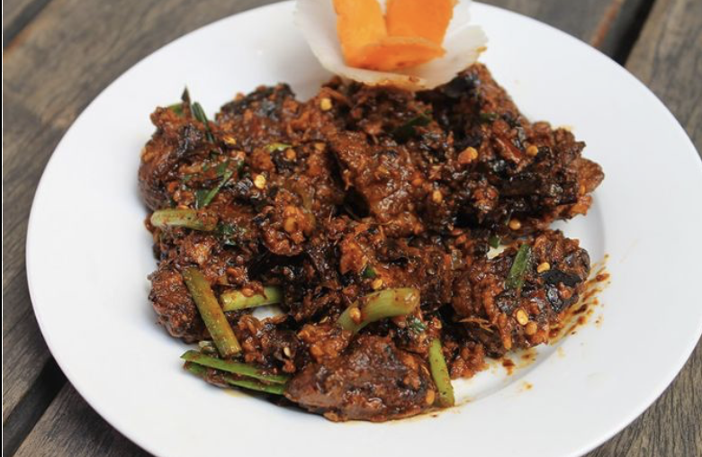

Cuisine
-

YOMARI
Yomari is a typical newari food made during special occassions. It is made up of rice flour and filled with chocolate sort of what we call 'chaku' inside.
-

SAMAYABAJI
Samayabaji is made up by including beaten rice, curry, meat, picles, peas, egg, and much more as seen in the figure. This item is must to have when you visit Bhaktapur areas of Nepal.
-

CHATAMARI
Chatamari is basically made by using flour and including different small meat items or eggs or veggies in it.
-

CHOILA
Choila is specially made from chicken or buff meat mixing it with raw onions, capsicum and frying overall. The spicier it looks, the tastier it is.